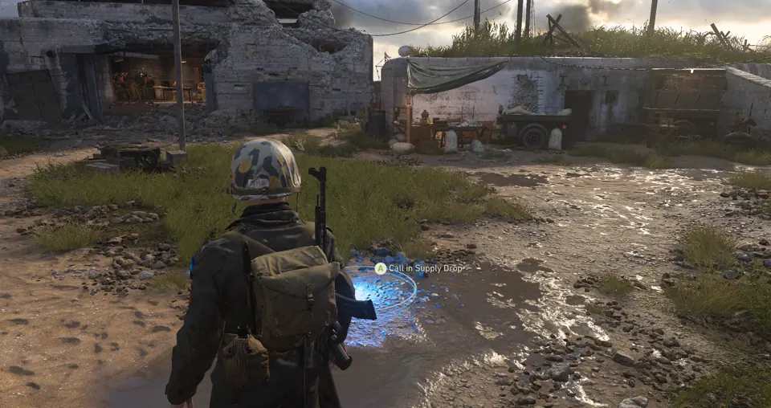

S2x-CR · Call of Duty: WWII · community client
The servers are empty. That’s the whole problem S2x solves.
When these captures were taken, nine dedicated servers from at least three different hosts were up and waiting. S2x-CR is the client that gets you onto them — and on a server running bot_fill, or in a custom match of your own, bots fill the lobby so an empty server still gives you a full game.
Requires a legitimate Steam copy of Call of Duty: WWII. S2x doesn’t ship the game files and doesn’t get around needing them — it patches and hosts what you already own.
Every image on this page is a real in-game capture, and every one carries the date and time it was taken. If a claim can’t be backed by one of them, it isn’t on this page.
01 — The part you can check yourself
This is the server browser, unedited
Before anything here tries to sell you something: the state of it on 21 September. Nine dedicated servers. At least three different hosts. Prop Hunt running on a 2017 engine that was never meant to support it. Pings from 19 to 154 milliseconds.
And every single row reads 0/18.
Server Browser
Browse dedicated S2x servers.
| Host | Map | Players | Type | Ping |
|---|---|---|---|---|
| CR’s Dom/HP/TDM/KC 9v9 on Shipment | Shipment 1944 | 0/18 | Hardpoint | 19 |
| CR’s Small Map Moshpit Mayhem | Shipment 1944 | 0/18 | Kill Confirmed | 30 |
| CR’s Small Map Moshpit (DLC) | London Docks | 0/18 | Hardpoint | 30 |
| Glooples Prop Hunt — DLC Only | Anthropoid | 0/18 | Prop Hunt | 73 |
| Glooples Prop Hunt — Standard Maps | Aachen | 0/18 | Prop Hunt | 74 |
| NamelessNoobs Stock Maps | USS Texas | 0/18 | Team Deathmatch | 80 |
| Glooples OBJ Server — CTF & DOM | Chancellery | 0/18 | Capture the Flag | 91 |
| SHIPMENT 24/7 | Shipment 1944 | 0/18 | Free-for-all | 154 |
| WAR 24/7 ALL MAPS | Operation Husky | 0/18 | War | 154 |
transcribed from the 17:59 capture · host colours are the launcher’s ^1 ^3 ^7 codes
Sitrep — read this before you download
Every server in these captures reads 0/18. That isn’t a crop or a dodge — they were empty when the shots were taken, and they may well be empty when you go and look.
This is a small project, not a secret thriving scene, and you should know that before you install anything.
What you’re looking at is infrastructure, not a population: nine real servers from at least three different hosts, answering pings from 19 to 154 ms, and — wherever the host runs bot_fill — bots ready to fill a lobby as soon as a map starts. The only missing input is a player.
That’s the whole pitch, and it’s why this page exists.
It would be easy to crop the player column out of that screenshot. Plenty of projects would. But you’d find out within about ninety seconds of installing, and then nothing else here would be worth believing.
The list is alive, not a mockup
Three captures of the same screen, taken about a day apart. Servers come and go as hosts bring boxes online and take them down again — which is the part a single screenshot can’t show you.
2026.09.20 · 20:54
2026.09.21 · 17:10
2026.09.21 · 17:59
02 — Why empty doesn’t mean dead
Join at 3am. Get a full 9v9.
Set bot_fill 17 and every match fills on map start — Team Deathmatch, Domination, Free-for-All, Hardpoint, and War with complete nine-a-side teams. The moment a real player connects, a bot steps out and hands over its slot.
This is the part most revival projects get wrong. The bots aren’t a consolation prize for a dead game. They’re the thing that lets a handful of people keep servers worth playing on — because nobody has to be the first one sitting in an empty lobby hoping someone else turns up.
Three name pools, so it isn’t the same lobby every night
54 names each, reshuffled every map. Default keeps the engine’s military codenames. Modern reads like 2016–2026. Nostalgia is the Xbox 360 lobby you remember — because an empty game should at least feel like 2017.
03 — And it counts for something
The match pays out again
You remember the end-of-match screen. Your soldier levels up, the fanfare plays, and the game tells you a Rare Supply Drop is yours. In retail that became a promise with nothing behind it — the level-up registered, and the drop simply never arrived.
Now it arrives. Every soldier level-up credits the drop the screen always said you’d earned, on dedicated servers and in Local Play alike. The game was never lying to you; there was just nothing left on the other end to honour it.
04 — From here to a match
Four steps, and none of them are a leap of faith
Own the game on Steam
Call of Duty: WWII, the 2017 release. If it’s already in your library you’re most of the way there.
Get the build and extract it
The zip is on the Discord. Drop its contents into the game folder, beside
s2_mp64_ship.exe.Start Steam, then run s2x.exe
Steam has to be running. You don’t have to launch the game from it — S2x finds the rest.
Open the browser and pick a server
Or start a Custom Match and set
bot_fill 17— that gives you a full lobby straight away, whether or not anyone else is online.
05 — The part that was switched off
Headquarters, rebuilt
Headquarters was the part of WWII that lived between matches — orders to chase, contracts to buy, payroll to collect, a Quartermaster to visit. When the servers went quiet, all of it went with them.
S2x-CR brings the whole loop back, re-implemented locally over the Achievement Engine protocol. Daily and weekly orders tick over on real timers. Contracts cost credits and pay out XP. Payroll accrues. The Quartermaster is open. None of it phones home — it runs on your machine, because that’s where the game lives now.
Come and find the rest of us
There aren’t many of us yet. That’s the honest position. But the people who are here organise games in the Discord, and a server with four people in it and fourteen bots is a genuinely good night.
06 — And then there’s the other game
Nazi Zombies, with its own economy
Not a footnote. Groesten Haus and The Final Reich play through with full progression — wall buys, the mystery box, consumables, wave tracking — and the Headquarters economy extends into it with a separate set of orders, contracts and skull-backed supply drops.
Kill zombies, survive waves, land headshots; the bars move while you play and pay out in Armory Credits and Rare Zombie Supply Drops.
07 — If you want to run one
A spare box and one click
The launcher is a Windows app with a mode toggle for Multiplayer and Zombies. Pick your maps, gametypes, score limits and bot settings, colour the server name with the swatch row — ^1 red, ^3 yellow, ^7 white — watch the preview, hit Launch. It finds the game folder on its own, so a spare PC with the game files copied across and no Steam installed becomes a dedicated server.
Those colours are the ones rendering in the browser captures at the top of this page. They survive the whole round trip. Only three of the nine servers up there are mine — that’s what this section is for.
And the bug that made hosting miserable
Roughly one launch in ten used to die a few seconds in. The cause was a repair guard inside the game’s anti-tamper layer, quietly restoring three of the client’s own patches; an integrity check then failed and the process was shut down.
The guard is now filtered like the rest of that layer.
08 — Go on then
The servers are up. The seats are yours.
You already own the game. That’s genuinely the only hard part.
Requires a legitimate Steam copy of Call of Duty: WWII. S2x-CR is in active development — bugs, crashes and missing features are possible. If you hit one, say so in #server-feedback on the Discord — that’s the fastest way to get it fixed.